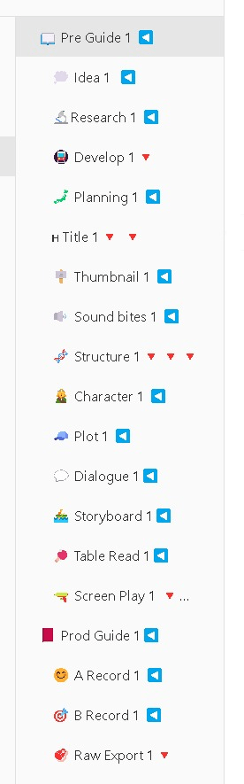
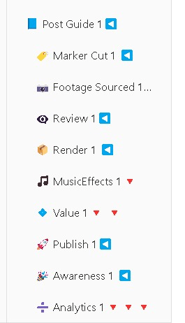

Ali Abdaal's Video Production: Architect vs. Archaeologist Approach
Set the Pipeline first ( Architect ) ( My Approach )


Ali Abdaal, a popular productivity YouTuber, often shares insights into his video creation process, which can be broken down into two distinct approaches: the Architect approach and the Archaeologist approach. Each of these represents a different way of structuring the creative process and making decisions along the way.
The Architect Approach: Plan and Build ( My Approach )
The Architect approach to video production is methodical, highly structured, and rooted in planning. It is similar to how an architect designs a building before laying a single brick. This approach involves:
-
Detailed Planning: Everything from the script, shot list, and editing notes are laid out in advance. The creator knows what the final product should look like before they even begin filming.
-
Efficiency: Since everything is planned, this approach allows for a smooth production flow. There’s less room for spontaneous changes, which can make the process faster and more predictable.
-
Control and Structure: The architect is in full control of the final outcome, ensuring that each aspect of the video aligns with the pre-planned vision. This approach works well for tutorials, explainer videos, or any content that requires clarity and precision.
-
Formulaic Consistency: This method allows creators to follow a repeatable format, ensuring consistency across their videos. It's particularly beneficial when you’re building a brand or sticking to a content strategy.
The Archaeologist Approach: Discover and Uncover ( Gambler)
The Archaeologist approach, on the other hand, is more exploratory and spontaneous. This method is akin to how an archaeologist uncovers treasures as they dig, unsure of what they’ll find until they reach it. In video production, it looks like this:
-
Exploration Over Planning: Instead of a concrete plan, this approach begins with an idea or a loose direction. The content is allowed to evolve during filming or editing, often leading to unexpected but exciting outcomes.
-
Creativity and Flexibility: The creator follows the flow of inspiration, allowing for improvisation and changes during the creative process. This can lead to more authentic, raw, and emotional content.
-
Discovery: The magic of the Archaeologist approach lies in the discovery. Sometimes, the best parts of a video aren’t pre-planned but happen organically during the process.
-
Serendipitous Results: While it can be unpredictable, the Archaeologist approach can produce videos that resonate on a deeper level due to the authenticity and natural progression of ideas.
Choosing the Right Approach
Both approaches have their merits and can be used in different contexts. Ali Abdaal himself mixes these approaches depending on the type of video he’s working on. For example:
-
Architect Approach: Used for videos like tutorials or productivity tips, where structure and clarity are essential.
-
Archaeologist Approach: Often used for personal vlogs, reflections, or interviews, where the conversation and story evolve organically.
Ultimately, the choice between the Architect and Archaeologist approach depends on the type of content you're creating, your personal style, and how much control or spontaneity you want to incorporate into your production process.
Conclusion
In the world of video production, finding the right balance between these two approaches is key. You can plan like an architect to ensure a smooth process and predictable results, but leaving room for archaeological discovery often brings out the unexpected magic that makes content truly engaging.
Whether you're an experienced creator or just starting out, understanding these two approaches can help you navigate the creative process and produce videos that are both effective and inspiring.
🔗 Connect with me:
-
💼 LinkedIn: https://www.linkedin.com/in/rifaterdemsahin/
-
🐦 Twitter: https://x.com/rifaterdemsahin
-
🎥 YouTube: https://www.youtube.com/@RifatErdemSahin
-
💻 GitHub: https://github.com/rifaterdemsahin
Imported from rifaterdemsahin.com · 2024